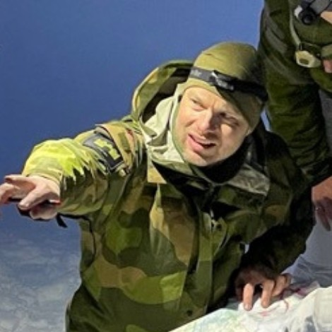
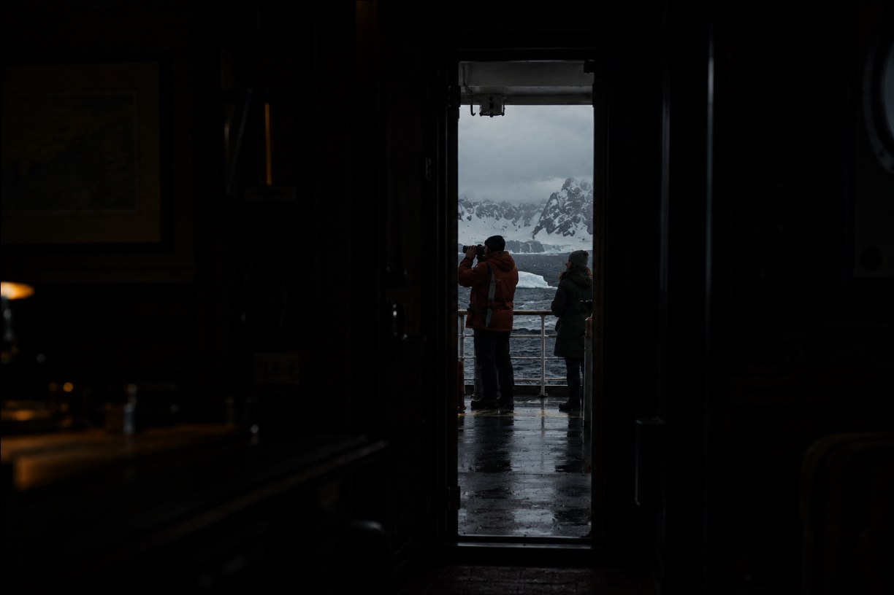
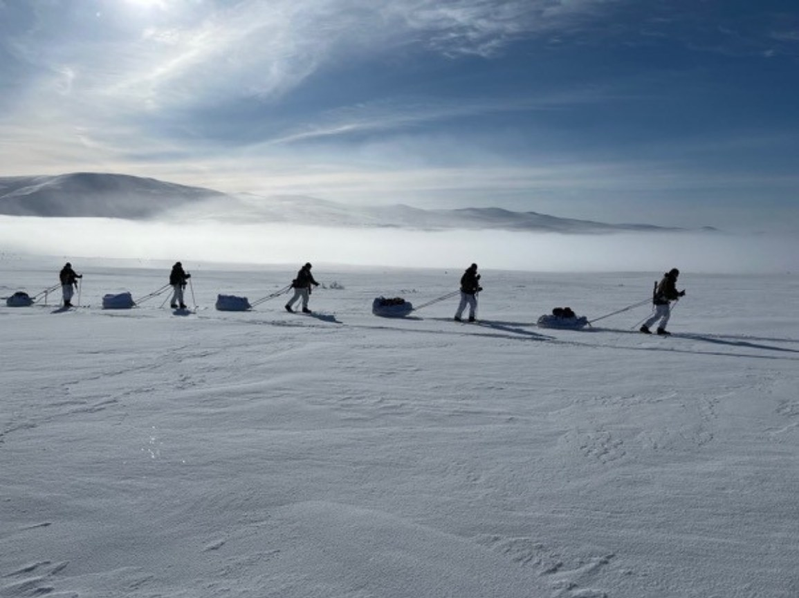
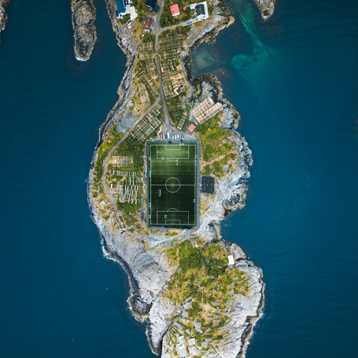

People




We are a small firm, and we choose the people we work with carefully. Everyone involved in our work is expected to think independently and bring original thinking to every question. That matters more now that AI has made answers cheap. We come from different fields and share a real curiosity about people, business and politics.